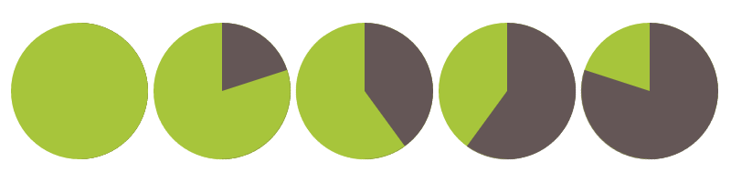
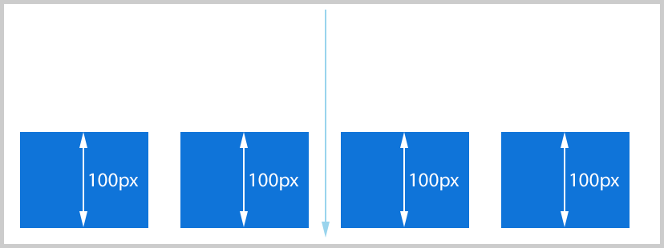

Баги в браузерах. Кто виноват и что делать?
Виталий Зюзин
Баги в браузерах

Кто виноват и что делать?
Виталий Зюзин
Разработчик интерфейсов в HTML Academy
2016
Кто виноват?
Разработчики.
Вопрос #1.
Сталкивались ли вы с багами в реализации спецификаций HTML и CSS в современных браузерах?
Вопрос #2.
Читаете ли вы спецификации HTML/CSS, чтобы найти истину?
Случай #1. HTML.
<div class="pie"></div>
Случай #1. CSS.
.pie {
width: 100px;
height: 100px;
border-radius: 50%;
background-color: yellowgreen;
}
Случай #1. CSS.
.pie {
width: 100px;
height: 100px;
border-radius: 50%;
background-color: yellowgreen;
background-image:
linear-gradient(to right, transparent 50%, #665555 0);
}
Случай #1. CSS.
.pie::before {
content: "";
display: block;
height: 100%;
margin-left: 50%;
border-radius: 0 100% 100% 0 / 50%;
background-color: inherit;
transform-origin: left;
}
Случай #1. CSS.
.pie::before {
content: "";
display: block;
height: 100%;
margin-left: 50%;
border-radius: 0 100% 100% 0 / 50%;
background-color: inherit;
transform-origin: left;
transform: rotate(0.25turn);
}
1
2


Случай #2. HTML.
<div class="flex-container">
<div class="flex-item"></div>
<div class="flex-item"></div>
<div class="flex-item"></div>
<div class="flex-item"></div>
</div>
Случай #2. CSS.
.flex-container {
display: flex;
}
.flex-item {
flex-basis: 150px;
min-height: 100px;
}
Случай #2. CSS.
.flex-container {
display: flex;
flex-wrap: wrap;
align-content: flex-end;
}
.flex-item {
flex-basis: 150px;
min-height: 100px;
}
1
2


1
🤔

Случай #3. HTML.
<div class="width"></div>
<div class="gradient"></div>
Случай #3. CSS.
.width {
width: 35%;
background-color: red;
}
.gradient {
background-image: linear-gradient(to right,
blue 35%, transparent 35%);
}
1
2


1

1
🤔
Случай #4. HTML.
<div class="gradient"></div>
Случай #4. CSS.
body {
background-color: skyblue;
}
.gradient {
width: 100%;
height: 200px;
background-image: linear-gradient(to right, white, transparent);
}
1
2


1
🤔

Спецификация изменилась.
Safari не использует технику pre-multiplied sRGBA.
Мораль
- не делить браузеры на «хороших» или «плохих»;
- обращать внимание на различия между отображениями браузеров;
- читать спецификацию, обращать внимание на раздел изменений;
- следить за публикациями сообщества, например, Flexbugs.
Немного про тестирование в браузерах
Проверяем баг в «ночной» сборке браузера
«Ночные» сборки могут содержать новые баги!
Багтрекеры суровы
- дизайн — привет из «нулевых»;
- пишут на английском;
- репорты оформлены по-разному.
Создаём репорт
- User-Agent;
- описание бага + ссылка на демо в песочнице или скриншоты;
- фактический результат;
- ожидаемый результат.
Пример
Можно отправить репорт из браузера
- Меню > Справка > Сообщить о проблеме;
- есть в Chrome, Opera, Firefox;
- лучше пойти на трекер.
Что делать, когда репорт отправлен?
- придумать обходной путь с использованием других свойств;
- придумать «хак» + попробовать автоматизировать использование хака;
- жить с багом, но следить за ним.
Важно репортить баги
или хотя бы проверять, есть ли они в трекере.
- разработчики не любят баги — разработчики браузеров тоже;
- ответственность пользователя, неравнодушное отношение;
- баги в моей работе находят пользователи, за это им спасибо.
Оффтоп
Репортите баги в оффлайне 🤓
Баги в браузерах. Кто виноват и что делать?
Виталий Зюзин, HTML Academy


 «Designing Flexible, Maintainable Pie Charts With CSS And SVG»
«Designing Flexible, Maintainable Pie Charts With CSS And SVG»